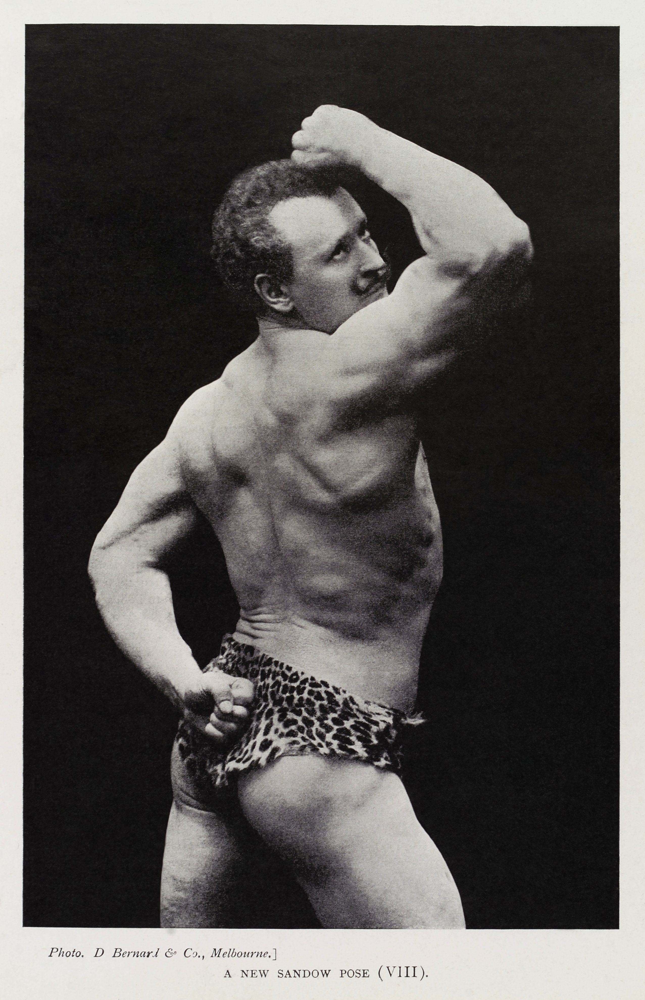
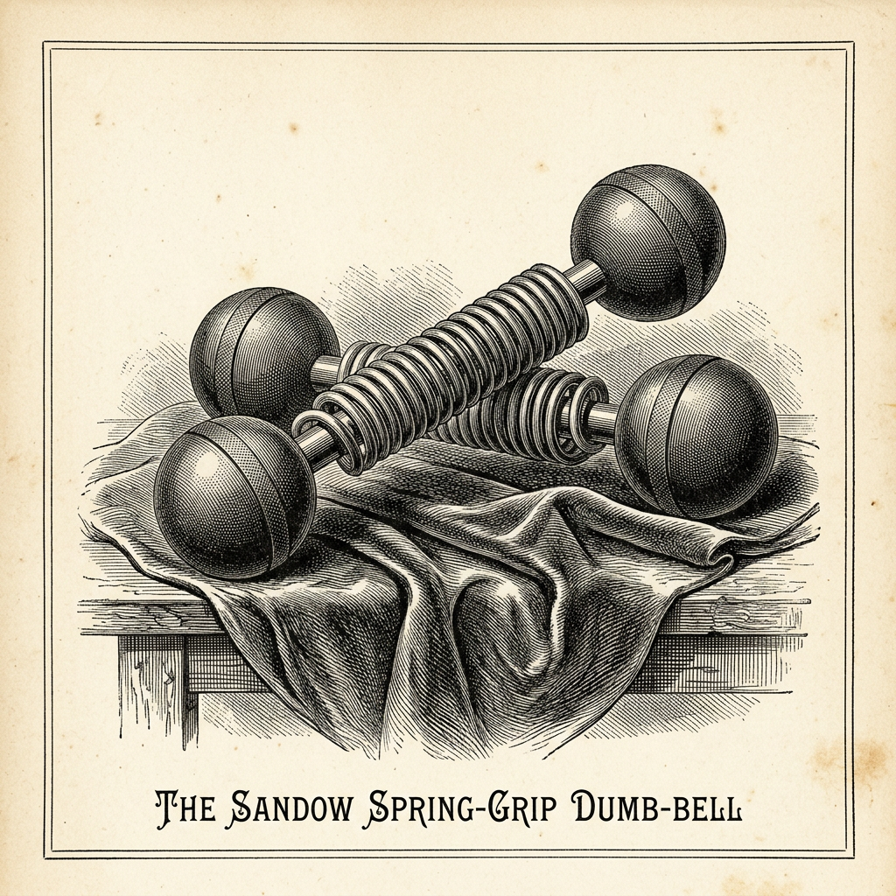
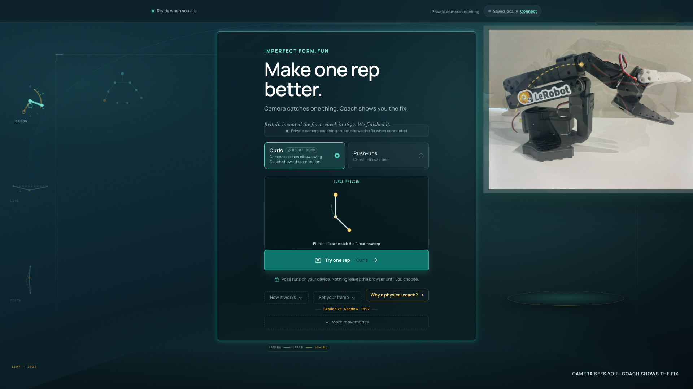
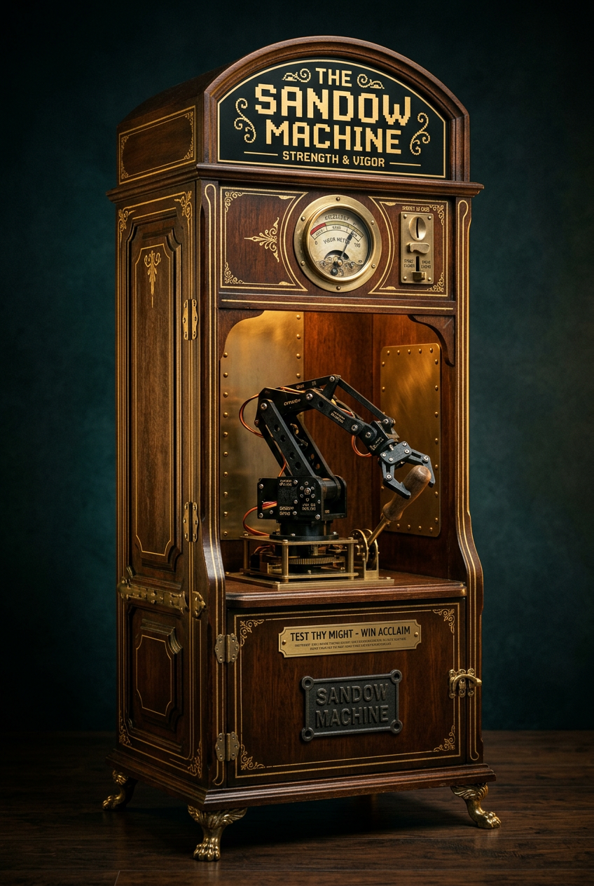
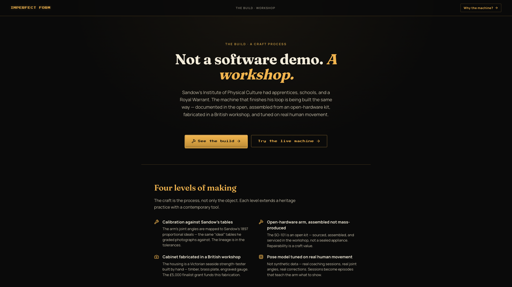
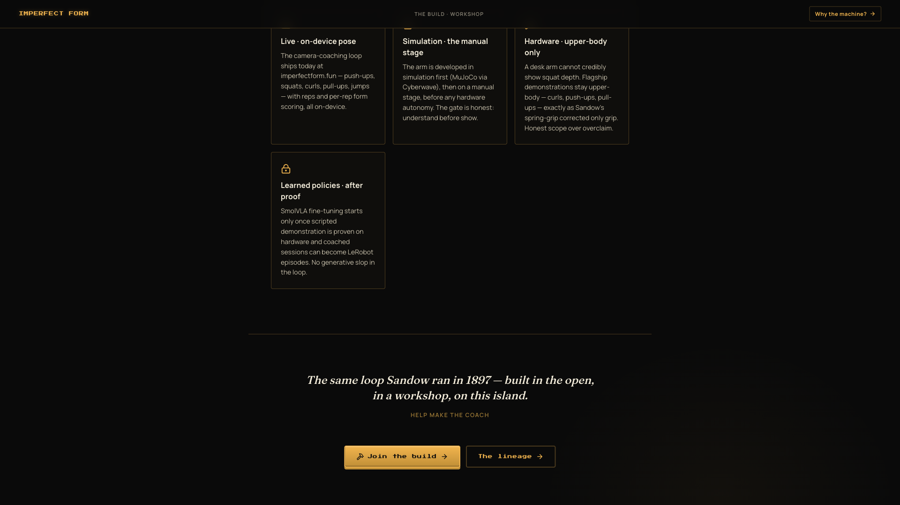
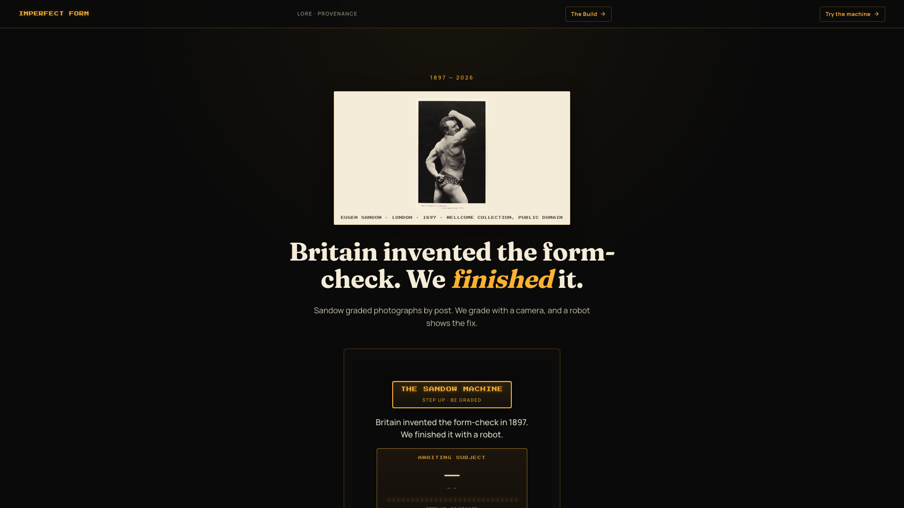

Eugen Sandow, “A New Sandow Pose (VIII)” — Wellcome Collection, public domain
In 1897, London ran the world’s first form-check.
Men across Britain posted their photographs to Sandow, and got them graded against his ideal tables.

“Supplied to King Edward VII by Royal Letters Patent”
Back came the correction, and a spring-grip dumbbell under Royal Warrant. Photo in. Grade out. By post.
Britain invented the form-check. We finished the loop.

MOVENET · TENSORFLOW.JS · ON-DEVICE
Step up. A camera in your browser reads your form. On-device. No video leaves the device.
SIMULATION · SCRIPTED PRIMITIVE
When your form breaks, the arm doesn’t tell you the fix. It shows you, in three dimensions.

FINALIST-PHASE CONCEPT
It looks like a Victorian seaside arcade. Underneath, it’s a working instrument. Satire with a steel core.

OPEN HARDWARE · ASSEMBLED IN THE UK
Open hardware, assembled by hand. Joint angles calibrated against Sandow’s 1897 tables.

The arm teaches the human. It never replaces them.
HONEST SCOPE
Upper-body corrections only. Lower-body demonstrations are out of scope.
Learned policies come after scripted demonstration is proven.
— like Sandow’s spring-grip, which corrected only grip
Honest about its scope: upper-body only, like Sandow’s spring-grip, which corrected only grip.
Learned policies come later, from real coaching sessions. Not from generative slop.

IMPERFECTFORM.FUN — LIVE NOW
The app is live now. The cabinet is the exhibit. A 130-year-old British loop, closed with a robot.
BRITAIN INVENTED THE FORM-CHECK. WE FINISHED IT.
Imperfect Form · The Sandow Machine
IMPERFECTFORM.FUN · CRÆFT PRIZE 2026
Britain invented the form-check. We finished it.